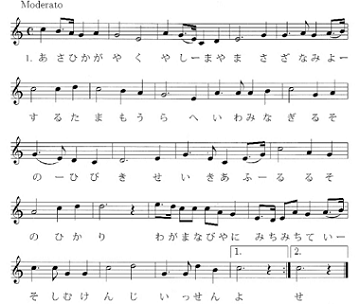
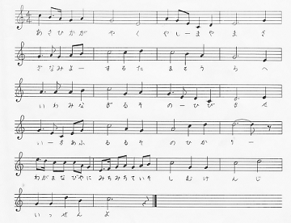

「朝日輝く(校友会の歌)」のメロディーについて
「朝日輝く(校友会の歌)」のメロディーには次の2種類があるようです。
| 第31回総会プログラムに掲載の楽譜  上記楽譜の演奏はこちら |
第5回総会プログラムに掲載の楽譜  上記楽譜の演奏はこちら |
左の楽譜は現在の東京玉翠会総会プログラムに掲載されているもので、高高創立110周年記念誌にも同じ楽譜が載っています。
右の楽譜は第5回から第7回の東京玉翠会総会プログラムに掲載されていたものです。
いろいろと違う点があるのですが、はっきり違っているのは「みちみちて」と「いそしむ健児」のところでしょう。
左の楽譜では「みちみちて」の最初の「みち」がミレと下がっていくのに対し、右ではミファと音が上がっています。
また、「いそしむ健児」では、左の楽譜は「し」が8分音符で「いーそーしむ」となっているのに対し、右の楽譜では「し」が2分音符で「いそしーむ」となっています。
筆者の高高時代（昭和47年ころ）に歌っていたのは右の曲だったような記憶です。
左右の曲の演奏を聞いてみると、右の曲の方がしっくりくる人も多いのではないでしょうか。
では、どちらが本来の曲なのでしょうか。
東京玉翠会第12回総会プログラムで、菊村紀彦氏が「校友会の歌の作曲者は大中寅二氏であるが、大中氏の曲の特徴としては、詩のリズムと曲のメロディーが同じということにある。」と述べています。つまり、日本語のアクセントがそのままメロディーになっているのだそうです。
そうだとすると、「みちみちて」の最初の「みち」が一音下がり、また、「いーそーしむ」となっている左の楽譜の方が大中氏の曲に特徴に比較的合っているように思います。
菊村氏は、「合唱曲を作る時、音楽の荒井三郎先生が、この音を変えようと言って伴奏など変えたりしたらしい。」とも述べられていますから、歌いやすいように少し変えたのが右の楽譜なのかもしれません。
ただ、菊村氏によると「楽譜はおそらく焼けたでしょう。」とのことですので、どちらが原曲だったかは現時点では不明です。